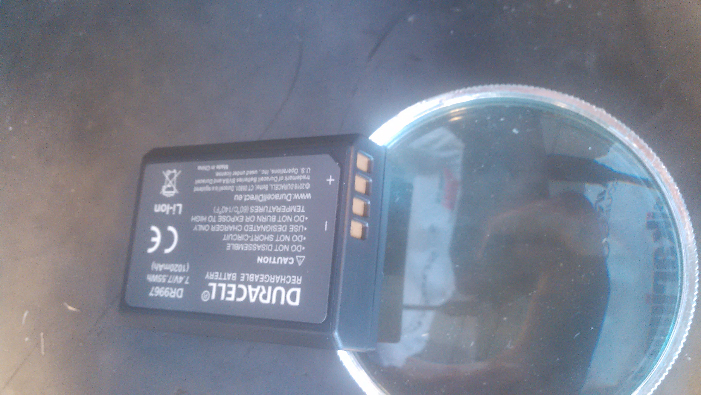

Fabrikarium - Projet Bionico
Table des matières
- 1. Présentation du projet "bionicohand"
- 2. La prothétique bionique de la main : présentation et enjeux
- 3. Montage de la main
- 4. Réalisation et modifications de l'électronique
- 5. Emboîture : conception d'une prise rapide de poignée
- 6. Améliorations
- 7. Savoir-faire techniques
- 8. Retours d'expérience: Généralités
1 Présentation du projet "bionicohand"
1.1 Bionicohand
Bionico est un projet de prothèse de main à commande électronique, dite "prothèse myoélectrique", conçu pour être réalisé à partir de matériaux accessibles pour une fabrication personnelle.
Ce projet s'inspire de projets open source autour de la réalisation de mains commandées électroniquement, notamment OpenBionics et Hackberry, et s'appuie sur ce qui se fait dans l'industrie médicale.
Un hackathon, le Fabrikarium a lieu à Toulouse du 19 au 21 octobre 2016. Il est organisé par My Human Kit et Airbus Group qui réunissent des acteurs d'horizons et compétences diverses dans le but d'étudier, concevoir, prototyper, expérimenter et progresser techniquement sur une série de projets visant à dépasser les handicaps en proposant des solutions accessibles à fabriquer soi-même.
Pour répondre au besoin de documentation des projets, une équipe de docsprinteurs a été mise en place par Flossmanuals Francophone.
L'objectif de cette documentation est de rendre compte des méthodes de réalisations des projets adressés au cours de ce hackathon, de sorte à pérenniser le savoir-faire et transmettre de quoi les perpétuer.
Dans cette optique, une partie des tâches du travail documentaire est d'une part de vérifier que la documentation existante est suffisamment explicite, pour la compléter si besoin et d'autre part, de documenter les nouveautés ainsi que rapporter les avancées en R&D. C'est l'objet de ce contenu.
Le présent texte a été rédigé par Christophe Schockaert (http://createcnix.eu/) et Laurent Malys (http://www.laurent-malys.fr/) pour Flossmanuals Francophone. Il est placé sous licence Creative Commons "CC BY 4.0", de même que toutes les images et vidéos accompagnant la rédaction du manuel.
1.2 Enjeux et programme du Fabrikarium
L'origine du Fabrikarium part du constat que les prothèses sont à la fois une nécessité pour celui qui en a besoin, qu'elles ont un coût élevé et une étendue de fonctions limitées par les choix de recherches et investissements menés par les entreprises spécialisées.
Des recherches et expériences ont été menées en laboratoires académiques ou par des amateurs, notamment pour des applications en robotique. Si la proximité semblait évidente, ce n'est pas le cas du tout, les champs d'application de la robotique et de la prothèse médicale sont complètement différents.
Le mode de fonctionnement de l'open source et l'émergence des fab lab est venu mettre un coup de pied dans l'accessibilité de fabrication et apporte des nouveautés dans les possibilités de confection de prothèses.
Voici par exemples un projet anglais (orange) et un projet japonais (blanc) pour la construction d'une prothèse de main motorisée, tous deux issus des fab labs et de l'/open source/ :

Figure 1 : Projets de prothèses de mains motorisées issues des fab labs
Le modèle anglais est construit dans un matériau souple et commandé par un moteur pour chaque doigt.
Pour l'atelier du Fabrikarium, c'est le modèle japonais qui a été retenu comme point de départ, c'est celui du projet exiii HACKberry.
Une première version a été adaptée lors d'un séjour de Nicolas Huchet de My Human Kit en immersion dans le fab lab de Berlin en Allemagne, elle vient se fixer sur sa prothèse médicale professionnelle.
Figure 2 : Première version de la Bionicohand fabriquée à Berlin sur le modèle du projet exiii HACKberry
L'objectif du Fabrikarium est d'améliorer cette première version et d'aboutir à un prototype de prothèse complète, entièrement réalisable soi-même.
À ce titre, les enjeux de cet atelier sont :
- Assurer un montage aisé de la main motorisée :
- vérifier la faisabilité de montage de la main en suivant le tutoriel (section Assemblage de la main)
- valider la sélection des pièces référencées dans les catalogues européens (section Adaptations aux pièces européennes)
- Utiliser une batterie et un chargeur du commerce plutôt qu'une batterie et un chargeur spécifiques au constructeur (section Connectique de la batterie)
- Valider le nouveau circuit imprimé et le fonctionnement de ses
branchements avec le microcontrôleur Arduino :
- présence de deux capteurs myoélectriques désormais (section Circuit imprimé : ajout d'un deuxième capteur myoélectrique)
- améliorer la commande des servomoteurs :
- améliorer le filtrage du signal des capteurs myoélectriques (section Filtrage du signal des capteurs myoélectriques)
- ouvrir et fermer par paliers, en restant en position à chaque étape, plutôt qu'avoir une commande d'ouverture et une de fermeture
- fournir un retour de sensibilité simple sur la main :
- éclairage d'une LED bleue si contact avec un objet froid, rouge s'il est chaud
- capteur de pression au bout du pouce avec un retour sensible au niveau de l'avant-bras (section Capteur de pression)
- Tester l'utilisation d'un smartphone grâce à un filtre capacitif sur l'index de la main (section Toucher conducteur pour les smartphones)
- Prévoir une prothèse et son emboîture, réalisable soi-même avec un
procédé simple et des matériaux accessibles :
- veiller à l'autonomie de la personne pour le chaussage
- permettre le changement d'équipements sur la main (section Emboiture : conception d'une prise rapide de poignée)
- Récolter les retours de patients qui testeront le projet
- Rendre compte sous forme de documentation des étapes de réalisation et des expériences menées
2 La prothétique bionique de la main : présentation et enjeux
2.1 Généralités
Les prothèses médicales sont des équipements élaborés, réalisés par des entreprises spécialisées, mettant souvent en œuvre des technologies de pointe. Leur coût est dès lors très élevé. S'il est pris en charge par la sécurité sociale dans nos pays, il ne l'est pas partout.
Chaque membre que la médecine s'efforce de remplacer possède des caractéristiques propres. Le projet "Bionicohand" se réfère à la main, dans une approche mécanisée, commandée électroniquement, pour offrir au patient une expérience de la préhension en remplacement de son membre manquant.
Jusqu'à l'émergence d'ateliers d'amateurs sur la fabrication de mains de robot, l'idée de réaliser une prothèse de main à bas coût était presque inconcevable. Cependant, ces expérimentations viennent changer la donne, et, de la main de robot, des projets ont donné naissance à des projets pour une prothèse de main. C'est là qu'intervient la "Bionicohand".
Un tel projet fait intervenir des domaines de compétences très variées, médicales, ergonomiques, techniques et artistiques. L'écoute des besoins du patient et de ses désirs sont également au coeur du sujet. C'est donc une approche multidisciplinaire.
La main de l'être humain présente des caractéristiques très spécifiques, qui n'existent pas telles quelles dans le monde animal.
Elle a également la particularité d'être difficile à reproduire.
En conséquence, quelques soient les prouesses d'ingénierie et les connaissances médicales mises en œuvre, il faut garder beaucoup d'humilité pour aborder un tel projet: il ne sera jamais possible de reconstruire une main telle qu'elle a été façonnée par la nature.
La première question à se poser lors de la confection d'une prothèse est de déterminer son utilité.
Pour une prothèse de jambe, l'usage essentiel paraît relativement facile, il s'agit de pouvoir tenir en station debout et de se déplacer le plus aisément possible.
Pour une prothèse de main, il y a des myriades de possibilités, il va donc falloir caractériser son usage.
2.2 Prothèse esthétique
La première facette, c'est celle de la prothèse esthétique :
Figure 3 : Présentation d'une prothèse de main esthétique

Figure 4 : Présentation d'une prothèse de main esthétique

Figure 5 : Prothèse de main esthétique, vue intérieure de sa composition

Figure 6 : Prothèse de main esthétique
Figure 7 : Prothèse de main esthétique, vue de l'emboîture
Leur prix va de 10k€ à 15k€, tout le travail est artisanal, sur mesure, y compris pour la coloration. Cela peut aller très loin, vous pouvez distinguer sur les photos jusqu'aux poils et la couleur des vaisseaux sanguins.
Les patients ont souvent des attentes, le travail de l'ergonome est de se rapprocher le plus possible, pourtant tout ne sera pas parfait. Par exemple, le corps change de couleur selon la saison, avec le bronzage, ou même simplement entre changements de température. Au niveau mécanique, la prothèse aura des limitations aussi. Le patient va donc devoir accepter les limites dans la réalisation d'une prothèse.
Vient alors la question technique : comment concevoir une prothèse ?
2.3 L'emboîture
L'élément essentiel de la prothèse est l'emboîture. C'est sa structure, sa fondation, il est important qu'elle soit confortable et adaptée à la morphologie de la personne.
Le point de départ sera un moulage en plâtre, dans un premier un négatif sera obtenu (il sera à l'envers pour l'obtention de la prothèse), duquel sera créé un positif. Ce moulage doit être fin pour s'adapter parfaitement au corps de la personne.
2.4 Fixation de l'emboîture
Il faut également travailler le système de fixation. En observant le coude, en le palpant, nous pouvons observer trois pointes osseuses.
Il y a le coude proprement dit, puis 2 épines sur le côté. Ce sont des zones très sensibles, qu'il va falloir décharger au maximum pour éviter d'y mettre une pression.
Pour le système de fixation, c'est une pince qui sera utilisée, en réalisant un accrochage en forme de fourche d'un côté du coude, puis un troisième accrochage qui viendra fermer la fixation.
Ce maintien tient très bien, par contre, il n'est pas possible de l'enlever. Or, c'est une opération fréquemment nécessaire.
Par ailleurs, la médecine n'est pas une science exacte. L'os n'obéit pas aux mêmes règles mécaniques qu'une structure métallique et des vis. L'os est quelque chose de vivant, il change en permanence.
En effet, l'os est entouré d'une espèce de sac qui perméabilise le passage des ostéophytes responsables de la production du calcium qui conduit l'os à pousser. Si ce sac n'est plus présent, l'os va continuer de pousser, donc il faut y remédier.
De plus, les moignons ont tendance à changer de volume selon les conditions de l'environnement ou de l'organisme. Il faut également pouvoir gérer les variations de volume chez le patient.
C'est le corps de l'emboîture qui sera en contact direct avec le moignon.
L'objectif principal dans la confection de la prothèse va être de veiller à la répartition de pression. Il faudra éviter que des hyper-pressions apparaissent à certains endroits, ce qui signifierait un manque de pression ailleurs. Si le maintien est trop mou, ce n'est pas bon non plus.
Dans la main présentée ci-dessous, il apparaît (photo du milieu) qu'il y a une partie rigide pour le corps de la main, une partie souple au niveau de la main, et une autre partie partiellement souple au niveau de la jonction entre la main et le poignet pour apporter une certaine flexibilité.
Figure 8 : Prothèse de main esthétique, vue du dessus, avec aperçu de la fabrication
Figure 9 : Prothèse de main esthétique, fabrication intérieure

Figure 10 : Prothèse de main esthétique, vue de l'emboîture
Le budget pour une telle prothèse peut aller jusqu'à 30.000 €. Sa durée de vie d'une telle prothèse est de 3 à 5 ans, ensuite il faut la renouveler. Ces coûts sont entièrement pris en charge par la sécurité sociale.
La conception de la prothèse dépend également de l'endroit où elle sera fixée. Aujourd'hui, les chirurgiens s'adressent de plus en plus souvent aux prothésistes afin de déterminer le meilleur endroit pour l'amputation. Ainsi, le choix dépendra à la fois des critères médicaux et des critères mécaniques pour le prothésiste, sachant que pour lui, la situation la plus facile à gérer, est celle où l'amputation a lieu entre le tiers-moyen et le tiers-long.
La prothèse pourra avoir plusieurs fonctions. Esthétique ou utilitaire, elle pourra également être motorisée. En fait, un patient utilisera différents types de prothèse, selon l'activité. Le crochet est une prothèse de travail, dont l'outil est interchangeable.

Figure 11 : Prothèse de main utilitaire, d'apparence simple, elle remplit bien un usage fonctionnel jusqu'à une certaine force
Figure 12 : Prothèse de main utilitaire, mécanique à trois doigts

Figure 13 : Prothèse de main motorisée, à droite

Figure 14 : Réplique 3D d'une prothèse de main Michel-Angelo utilitaire
Les deux dernières sont des mains motorisées, le tout premier modèle de main à commande myoélectrique est apparu en 1967.
La main Michel-Angelo est une des plus coûteuse aujourd'hui. Les photos en présentent une réplique 3D. Dans le modèle réel, elle est équipée de 3 moteurs: un moteur au sein de la main, un pour la rotation et un pour la préhension.
Figure 15 : Réplique 3D d'une prothèse de main Michel-Angelo, normalement équipée de 3 moteurs
2.5 Reproduire les mouvements de la mains
Dans la prise en compte du réalisme du mouvement de la main, il y a un réel défi sur la rotation. En effet, les mouvements sont limités du fait de la constitution des os et des muscles du bras et de la main. Le mouvement de rotation de la main met en jeu un mouvement qui démarre dès le début de l'avant-bras.
Les deux os radius et cubitus sont parallèles au repos (c'est le cas de la station bras tendus vers le bas), ils viennent se superposer l'un au-dessus de l'autre au cours de la rotation.
C'est ce que vous pouvez voir sur la video et la série d'images qui suivent.


Figure 24 : Démonstration des mouvements des os du bras en photos
Les caractéristiques du mouvement induisent donc des contraintes spécifiques à la tenue de la prothèse au bras:
2.6 Capteurs musculaires
La commande d'une main motorisée se réalise à l'aide de capteurs musculaires. Dans le corps, les signaux électriques musculaires ont pour support les fibres musculaires, donc l'eau.
Ces signaux sont captés par des électrodes, qui vont pouvoir relayer le signal électrique à un circuit de commande. Le circuit se comportera différemment du mouvement corporel musculaire, le patient devra donc s'habituer à manipuler la prothèse, ce qui nécessite une phase d'apprentissage. Prendre un objet solide ou un objet fragile comme un gobelet à café en plastique nécessitera un abord différent. La manoeuvre couvre une grande amplitude de forces sur une petite plage d'action musculaire, le contrôle du mouvement est donc subtil.
Figure 25 : Commande d'un doigt motorisé au moyen d'un capteur musculaire
Sur le plan des caractéristiques physiques pour le traitement du signal, la tension des signaux musculaires est de l'ordre de 5µV. Donc, c'est très petit et l'acquisition du signal est très sensible aux parasites (proximité de transformateurs, de téléphones portables et autres sources de perturbations potentielles).
Au niveau électronique, il faut donc utiliser un amplificateur différentiel pour filtrer les signaux parasites en fonction de la longueur d'onde du signal.
Sur la main myoélectrique, la pression est de 10kg/cm2. Il y a également des différences homme/femme à prendre en compte dans l'élaboration de la prothèse.
Il faut également savoir que depuis le bras, il n'est pas possible de capter les signaux pour tous les doigts, il n'y a pas un signal par muscle, le mouvement corporel se répartit autrement dans le jeu des tendons du bras et de la main.
Dans le monde des prothèses motorisées, il se fait aussi des retours de sensibilité, qui permette de rendre compte d'un ressenti de ce qui est pris en main.
Et parmi les particularités que le patient a à prendre compte, il y a la sensation fantôme. C'est une sensation nerveuse qui se réveille à un endroit que le cerveau interprète comme là où le membre était présent auparavant. C'est assez troublant et fait également l'objet d'un apprentissage.
Dans la répartition, il y a un choix s'opère chez les patients : 50% des gens portent des prothèses, et 50% n'en portent pas.
3 Montage de la main
3.1 Plans de la main Bionico, composants et documentation existante
Le projet est présenté et documenté sur http://myhumankit.org/ et http://bionico.org/.
Celui-ci s'appuie sur le projet japonais exiii HACKberry.
Les plans pour la réalisation des pièces par impression 3D sont disponibles au format STL sur la plate-forme GitHub: https://github.com/exiii/HACKberry.
Pour le hackathon du Fabrikarium, les pièces imprimées ont été commandées chez Würth Industries, qui les a fabriquées sur une machine Dimension de Stratasys, machine de qualité industrielle.
Au niveau des finitions, le résultat sur ce type de machine est bien plus fin que sur une imprimante de bureau 3D qui pourra présenter des bavures à certains endroits.
Pour ce qui est des pièces et composants du commerce, il a fallu trouver la correspondance européenne par rapport à celles référencées dans le projet au Japon. En conséquence, les caractéristiques ne seront pas entièrement identiques.
Plusieurs manuels d'assemblage sont à disposition:
- le tutoriel de My Human Kit réalisé par Nicolas Huchet lors d'une résidence à Berlin (en français et en anglais) : http://myhumankit.org/tutoriels/main-hackberry-exiii/
- la documentation en anglais et japonais d'exiii, l'équipe japonaise qui développe le projet HACKberry original. Sur la partie mécanique elle est principalement constituée de vues 3d pour chaque étape du montage, avec des références précises de chaque pièce à utilisée. La documentation qui nous intéresse lors du Fabrikarium est séparée en 3 pages :
Sur le dépôt GitHub du projet, on trouveras également :
- la liste des pièces (BOM = bills of material)
- les sources du programme arduino
- les schémas des circuits imprimés
- les fichiers des pièces à imprimer (.stl)
- les fichiers d'assemblage aux formats "step" et "igs".
Ces derniers fichiers sont particulièrement intéressants pour le montage car ils permettent de visualiser l'assemblage complet de toutes les pièces, qu'il s'agisse de pièces imprimées, de pièces mécaniques conventionnelles (vis, entretoise, …) ou d'électronique. Le format "Step" est un standard ouvert qui peut être lu par le logiciel de CAO libre FreeCAD.
La documentation ici présente fournira un mode d'emploi qui viendra compléter les informations qui pourraient manquer dans ces guides.
Elle s'attardera également sur les différences et difficultés particulières rencontrées lors du montage des deux mains au Fabrikarium. Ces différences ont deux causes principales :
- elles peuvent être dûes à des composants non disponibles en Europe, et pour lesquels l'adaptation avec des produits disponibles plus localement est un objectif du workshop,
- elles peuvent être dues à des erreurs de commandes, auquel cas les solutions trouvées lors du workshop seront tout de même détaillées.
Les nouveautés ou nouvelles fonctionnalités mises en place lors du Fabrikarium seront l'objet des chapitres suivants.
Deux mains (rouge et jaune) sont montées en parallèle par chacune des équipes avec quelques différences dans les solutions trouvées.

Figure 26 : Les deux mains montées lors du Fabrikarium (sans les servomoteurs ni l'électronique)
3.2 Assemblage de la main
3.2.1 Identification des pièces
Une première étape pour organiser le travail d'assemblage est d'identifier et rassembler les pièces dont nous aurons besoin pour la réalisation.
Par méthode, les pièces seront regroupées pour chaque doigt :
Figure 27 : Regroupement des pièces pour la construction de la main
Attention à séparer le doigt de l'index, qui a une rainure supplémentaire au milieu :
Figure 28 : Repérage de l'index au moyen de la rainure
L'ensemble des photos pour l'organisation des pièces est disponible sous medias/02_montage_mecanique/01_plan_disposition_pieces.
3.2.2 Montage des doigts et de la main
Le montage des doigts et de la main est décrit dans le tutoriel My Human Kit:
- http://myhumankit.org/tutoriels/main-hackberry-exiii/#step-7
- http://myhumankit.org/tutoriels/main-hackberry-exiii/#step-8
- http://myhumankit.org/tutoriels/main-hackberry-exiii/#step-9
- http://myhumankit.org/tutoriels/main-hackberry-exiii/#step-10
Au cours du Fabrikarium, une série de photos sur le montage ont été prises : "medias/02_montage_mecanique/02_montage_main".
A noter que dans le modèle commandé pour l'atelier, les doigts ont été regroupés par couleurs selon les parties de la main. L'esthétique s'en retrouve différente et a pour effet de faciliter le repérage des pièces.
Au travers de ces photos, les particularité suivantes sont mises en évidence :
- Forer les pièces pour les agrandir : certains trous doivent être agrandis pour être à dimension des axes
- Assemblage des axes dans les entretoises, visser avec précaution: les pièces sont en plastique, il ne faut pas serrer trop fort pur ne pas déformer les pièces et l'entretoise (le passage des vis et axes), mais suffisamment pour que l'assemblage tienne
- Montage de l'index
- Montage des 4 doigts pour la paume
- Montage du pouce : celui-ci est légèrement différent par rapport au tutoriel, il y a deux pièces circulaires à "sertir" entre elles, là où le tutoriel désignait 2 pièces également, mais conçues autrement (l'une avec un double anneau, l'autre avec un anneau simple)
- Montage de la main en réservant la place pour l'accueil des moteurs
3.3 Adaptations aux pièces européennes
3.3.1 Les vis
Le premier problème rencontré par les deux équipes est la casse d'entretoises en plastiques et de pas de vis. Il s'agit sans doute d'un problème de commande : les vis utilisées ont un diamètre de 2.2mm au lieu de 2mm. De plus, il est précisé dans la documentation en anglais qu'il s'agit de vis autoforeuse ("tapping screw") ce qui n'était pas le cas des vis utilisées lors de ce montage.

Figure 29 : Agrandissement du trou d'une des entretoise en plastique cassée
Compte tenu de la précision de l'impression 3d, il est de toute façon nécessaire d'agrandir les perçages de vis. Cet agrandissement se fera donc avec un forêt de 2,2mm, voire 2,4mm, au lieu du foret de 2mm préconisé dans les tutoriels.
3.3.2 Les entretoises
Les 6 entretoises métalliques ("Metal Collar" dans la BOM) utilisées pour les glissement des axes au niveaux des phalanges et des bielles n'ont pas le même diamètres que celles du projet original.
Cela concerne les pièces :
- HbFingerMainCouplerLink
- HbMiddle-RingCouplerLink
- HbRing-LittleCouplerLink
Il faut donc agrandir les trous qui doivent les recevoir.
- On commence par percer à 3,8mm à la perceuse à colonne

Figure 30 : Perçage à 3.8mm toujours un peu trop petit malgré le chauffage de la pièce
- Le trou est ensuite agrandi puis chanfreiné du côté où on introduit l'entretoise

Figure 31 : Agrandissement à 4mm

Figure 32 : Les outils pour percer, puis chanfreiner
- L'entretoise est ensuite insérée "à la presse", avec l'aide de l'étau de la perceuse à colonne.

Figure 33 : Insertion à la presse
À terme, il faudrait donc agrandir les trous dans les modèles géométriques pour que les pièces imprimées soient directement adaptées à ces entretoires.
En raison du diamètre des vis (2,2mm au lieu de 2mm), il est également nécessaire d'agrandir, à la perceuse à colonne, le diamètre intérieur des bagues à 2,2mm.
3.3.3 Les axes de rotations des doigts
Les axes qui permettent l'articulation entre la paume et les doigts font 16mm au lieu de 15mm comme précisés dans la BOM. Il s'agit de la référence Shaft "d2L15" dans la BOM et "HbFingerPosture01" dans les fichiers 3d.
Il est donc nécessaire de les limer. À voir si des axes de 15mm sont disponibles dans le commerce, ou si des axes de 14mm qui seraient disponibles pourraient suffire pour les remplacer.
3.3.4 Problème du gros servomoteur (index)
Les dimensions ont l'air correctes mais il y a juste une petite excroissance qu'il suffit de limer
#+CAPTION Limage de l'excroissance à la dremel (1)

#+CAPTION Limage de l'excroissance à la dremel (1)

Un autre problème est plus critique : les servomoteurs commandés (modèle SM-S4303R) sont continus, et tournent à 360° sans butée mécanique. Il n'est donc pas possible de connaître leur position absolue et ils sont inutilisables pour la main bionique. Ils sont remplacés par un modèle Hitec FS-5106B.
3.3.5 Gros problèmes des petits servomoteurs (pouce et auriculaire)
Les petits servomoteurs disponibles pour le Fabrikarium (modèle TGY-90S) ne sont pas aux bonnes côtes : 3 mm de plus dans l'épaisseur (dans l'axe de l'arbre du servo). Il a donc fallu adapter leur fixation à la paume et leur liaison au niveau de l'arbre de sortie.
Finalement, nous avons pu récupérer un autre servomoteur (modèle SM-S2309S), dont les dimensions sont plus proches de celles attendues et qui s'adapte correctement pour l'auriculaire. Il a donc été utilisé sur une des deux mains.

Figure 34 : Deux modèles de servomoteurs : le TGY-90S (à droite) s'adapte difficilement, le modèle SM-S2309S un peu mieux.
(aparté lexicale : on appelle "bras" ou "croix" la petite bielle fixée directement sur la sortie du servomoteur)
- Du côté du pouce
Il y a de la place pour décaler la fixation de la sortie du servo du côté du pouce. Pour éviter de changer l'axe de rotation du pouce, nous avons un petit peu usiné à la Dremel la partie de la paume à laquelle est fixée de bras du servomoteur.

Figure 35 : Usinage de la paume pour ajuster l'axe de rotation du pouce
Il a également fallu arrondir certains angles des languettes de fixation du servomoteur

Figure 36 : Arrondissement des languettes de fixations du servomoteur
Une cale formée par deux petits morceaux d'une croix en plastique de servo superposée à été intercalée. D'abord maintenu en place à l'adhésif double face, elle est finalement fixée avec de la colle cyanoacrylate (super glue).

Figure 37 : Fixation de l'arbre du servomoteur à la paume, vue 1

Figure 38 : Fixation de l'arbre du servomoteur à la paume, vue 2
De part sa position, le servo du pouce bloque d'accès au port usb de l'arduino et gêne légèrement celui du jack.
- Du côté de l'auriculaire
Il parait compliqué de reculer le servo pour conserver l'axe de la grande bielle. Nous avons donc choisi de l'avancer, pour faire passer la bielle de l'autre côté de la croix du servo moteur. Les deux surfaces sur lesquelles est fixée le servo ont donc été déplacées de 6mm et le fond de 3mm (sauf que la différence a été oubliée lors de la modification de la pièce, il a donc fallu réusiner le fond de 3mm).
La pièce HBMotorHolder01 a donc été modifiée avec Blender et réimprimée en blanc.

Figure 39 : Les modifications effectuées sur le support du servomoteur de l'auriculaire

Figure 40 : Il a fallu réusiner le fond qui avait été déplacé de 6mm au lieu des 3 prévus

Figure 41 : Le servo monté sur son nouveau support
Figure 42 : Le nouveau support du servo monté sur la paume
L'illustration suivante permet de bien voir la différence pour la fixation de la bielle de l'auriculaire : à gauche le montage d'origine avec le bras à l'intérieur, du côté du servo ; à droite le montage avec le servo plus large, le bras est fixé à l'extérieur.

Figure 43 : Le nouveau support du servo monté sur la paume
La nouvelle pièce ne s'insère pas entièrement dans l'ouverture de la carte électronique, ce qui n'empêche heureusement pas de fermer le capot supérieur de la main.
3.4 Montage des servomoteurs
3.4.1 Protection des servomoteurs
C'est l'opération décrite à l'étape 8 du tutoriel : http://myhumankit.org/tutoriels/main-hackberry-exiii/#step-11.
Au préalable, enlever le cache du servomoteur.
L'opération consiste à couper le fil du moteur (rouge), pour insérer un fusible réarmable. Son principe de fonctionnement est qu'il coupe brusquement lorsqu'il atteint une une certaine température, qui correspond à un courant donné.
La connexion est réalisée par brasage (voir "Brasure et soudure"), puis elle sera protégée en utilisant un isolant rétractable, qui a la particularité de se resserrer en chauffant.
Il y a 2 petits moteurs ainsi, un pour le pouce, et un pour les trois doigts. Ensuite, il y a un plus gros moteur pour l'index.
Les prises de vue réalisées au cours du Fabrikarium sont sous "medias/03_montage_moteurs/01_protection_moteurs".
3.4.2 Test des servomoteurs
Après modification, chacun des servomoteurs sera testé après branchement du microcontrôleur Arduino pour s'assurer qu'il répond aux commandes.
Ces essais sont réalisés au moyen de l'environnement de développement (IDE) Arduino. Dans l'application, il y a un menu spécifique pour tester un servomoteur: le processeur commande le moteur qui y est branché, il mène le moteur tout le long de sa course dans un sens, puis dans l'autre.
L'idéal serait d'utiliser un outil de test de modélisme, qui serait plus fin, mais l'IDE Arduino permet de faire ça, très simplement.
3.4.3 Installation des servomoteurs
Les servomoteurs sont logés dans leur emplacement dans la main.
Ce sont les opérations décrites aux étapes:
- http://myhumankit.org/tutoriels/main-hackberry-exiii/#step-13
- http://myhumankit.org/tutoriels/main-hackberry-exiii/#step-14
- http://myhumankit.org/tutoriels/main-hackberry-exiii/#step-15
Avant de les installer, il faut qu'ils soient configurés en butée. Pour cela, tourner le moteur sens antihoraire jusqu'à la butée et mettre le moteur dans son emplacement. Attention, il y a risque de casse si la butée ne correspond pas à la fin de course.
Les clichés pris au cours du Fabrikarium sont sous "medias/03_montage_moteurs/02_installation_moteurs".
4 Réalisation et modifications de l'électronique
4.1 Alimentation
Le circuit d'alimentation assure l'approvisionnement en électricité des composants électriques et électroniques de la Bionicohand.
4.1.1 Connectique de la batterie
La "Bionico Hand" sera alimentée par une batterie de 8.4V, disponible dans le commerce avec son chargeur qui se connecte à un port USB.
Pour ce faire, il est prévu que la batterie d'alimentation vienne se brancher à un circuit imprimé en PCB au moyen d'une prise jack. C'est sur ce circuit que viendront se brancher le microcontrôleur Arduino, les capteurs, et les interrupteurs de commande.
Il est nécessaire de trouver un moyen pour brancher cette batterie au câble d'alimentation de la prise jack.
Pour gagner de la place et faciliter la construction, ce câble sera soudé directement aux connecteurs de la batterie, en veillant à déposer une brasure suffisamment fine pour pouvoir placer la batterie dans le chargeur en conservant son branchement.
La video qui suit explique la réflexion qui a été menée pour aboutir à la solution pour le branchement de la batterie.
Pour réaliser le branchement, il faut déterminer la polarité des fils reliés au jack, sachant que la polarité positive du jack est dans le conducteur intérieur et la polarité négative dans le conducteur extérieur.
Figure 44 : Test des polarités du fil connecté à la prise jack
Figure 45 : Test des polarités du fil connecté à la prise jack
A l'aide d'un multimètre, marquer le fil positif en mesurant que la résistance est nulle (contact établi) lorsque le multimètre est branché sur la broche positive. Souvent, le multimètre émet un beep sonore dans cette configuration pour signaler le contact franc.
Ensuite, sur la batterie qui comporte 4 connecteurs, il faudra identifier la borne "+" pour y souder le fil positif relié au jack et la borne "-" pour y souder la masse.

Figure 46 : Repérage des bornes "+" et "-" identifiées sur la batterie

Figure 47 : Test des polarités du fil connecté à la prise jack
Une fois les bornes positive et négative clairement identifées, il faudra y souder les fils correspondant reliés à la prise jack:

Figure 48 : Fils de la prise jack soudés sur les bornes adéquates de la batterie
A l'issue de l'opération, tester que la batterie ainsi équipée s'ajuste dans le chargeur et que la charge est effective (la LED du chargeur devient rouge pour indiquer que la batterie est en charge, pourvu qu'elle n'ait pas été chargée au préalable).
Enfin, solidariser les fils sur le côté externe de la batterie.
L'ensemble des photos et vidéos se rapportant au branchement de la batterie sont disponibles à l'emplacement "medias/04_circuits_electriques/01_alimentation/".
4.1.2 Confection d'un régulateur de tension
A l'entrée du circuit, c'est une batterie de 8.4V qui sera positionnée.
Or, les équipements électroniques pour notre main doivent être alimentés par une tension de 5V.
Pour obtenir une tension d'entrée de 5V pour le circuit de la main, il faudra donc placer un régulateur. Le domaine de fonctionnement de la batterie se situe entre 8.4V et 7.2V (2*3.6V) à minimum de charge (après quoi, la tension chute rapidement).
Dans un tel montage, la différence de puissance correspondant à la conversion de tension entre l'entrée et la sortie sera dissipée en chaleur.
Puisque la tension minimale de fonctionnement de la batterie sera de 7.2V, il y a donc 2V de marge. Pour un meilleur rendement énergétique, il pourra être envisagé de choisir une batterie plus faible s'il existe dans le commerce des modèles aussi pratiques d'utilisation que celui qui a été trouvé.
Au cours du Fabrikarium, le régulateur conçu pour la "Bionico Hand" a été construit à partir d'un un régulateur linéaire à 5V, de référence "7805" et du circuit suivant :
- un dissipateur a été monté sur celui-ci pour dissiper la chaleur résultant de la conversion de tension excédentaire
- en amont et en aval deux capacités de filtrage ont été ajoutés, une chimique polarisée (1000µF, cylindre, qui gère l'appel de courant) et une céramique (100 nF, filtre les petits parasites, appels de courant)
Le circuit est représenté sur les photos qui suivent.

Figure 49 : Circuit de montage pour le régulateur de tension 5V - composants
Figure 50 : Circuit de montage pour le régulateur de tension 5V - connexions
Une video montre le travail de brasure pour souder les composants et réaliser le circuit de connexion:
Vous trouverez quelques conseils pour obtenir une bonne brasure à la section "Brasure et soudure".
A l'issue du montage, le régulateur devra être testé. Pour cela, il faudra utiliser une alimentation stabilisée, réglée à 8V, qui se situe dans la plage de tension attendue de la batterie dans son domaine de fonctionnement.
A l'aide d'un multimètre, deux mesures seront faites. Dans un premier temps, à l'entrée du circuit, pour vérifier que la tension de 8V commandée est bien présente. Ensuite, dans un deuxième temps, vérifier que la tension indique 5V stabilisés à la sortie du circuit.
L'ensemble des photos et vidéos disponibles pour la confection du régulateur de tension sont rassemblées dans le dossier "medias/04_circuits_electriques/02_regulateur_tension/".
4.2 Circuit imprimé : ajout d'un deuxième capteur myoélectrique
Le circuit imprimé (PCB) a été conçu pour accueillir les équipements de commande et contrôle des moteurs de la Bionicohand, dont le microcontrôleur Arduino, ainsi que le circuit d'alimentation pour la fourniture en énergie.
Le schéma du PCB a été revu par rapport au projet exiii HACKberry pour permettre l'installation d'un capteur supplémentaire. Il en découle une utilisation différente des bornes du microcontrôleur Arduino, d'où un nouvel adressage à prévoir entre le microcontrôleur et le circuit.
4.2.1 Branchement des éléments du circuit imprimé
Comme indiqué dans la rubrique "brasure et soudure", les éléments à fixer au circuit imprimé le seront en commençant par les plus petits.
Les différentes phases d'assemblage sont présentées dans le tutoriel My Human Kit - étape 16.
La première photo présente le circuit PCB et les composants à assembler, que nous avons ici pour le /Fabrikarium/ :

Figure 51 : Éléments à assembler au circuit imprimé PCB

Figure 52 : Poste à souder
Les photos 2, 3 et 8 présentent l'installation du jack pour l'alimentation.
Les photos 4 à 7 présentent l'assemblage du bouton de commande on/off, des borniers (pin header ou têtes de broches) mâles et femelles et des boutons de commande.
- Installation du bouton on/off :

Figure 53 : Présentation de l'interrupteur on/off

Figure 54 : Mise en place de l'interrupteur on/off

Figure 55 : Interrupteur on/off en place

Figure 56 : Présentation de la brasure par revers pour l'interrupteur on/off, en le maintenant en place
Figure 57 : Brasage de l'interrupteur on/off par revers
- Assemblage des borniers pour la commande des moteurs et pour accueillir le microcontrôleur Arduino (selon leur positionnement, ils pourront être coupés a posteriori pour disposer d'un meilleur maintien) :

Figure 58 : Présentation du bornier pour le microcontrôleur Arduino sur le circuit

Figure 59 : Brasage du bornier par revers, bien posé sur la table

Figure 60 : Brasage du bornier par revers, de plus près

Figure 61 : Présentation du bornier pour la commande des moteurs

Figure 62 : Assemblage complet des borniers et du jack femelle pour l'alimentation
3.Installation des boutons de commande :

Figure 63 : Assemblage des boutons de commande pour terminer cette face du PCB
Les photos 9 à 12 du tutoriel My Human Kit concernent le régulateur de tension que nous avons revu au cours du Fabrikarium. Nous ne les reverrons pas ici.
Pour visualiser l'ensemble des photos sur le montage du circuit imprimé, se référer au contenu du dossier medias/04_circuits_electriques/03_circuit_imprimé_PCB.
4.2.2 Deux approches pour la connexion des capteurs
Dans le projet original, il était prévu une prise mini-jack stéréo, qui permettait donc de relayer une masse, une tension d'alimentation et un signal.
Par rapport au projet exiii HACKberry, la Bionicohand prévoit d'utiliser deux capteurs afin d'étendre les possibilités de pilotage de la main commandée électroniquement.
Pour pouvoir brancher un deuxième capteur, le circuit imprimé a été repensé pour faire sortir les deux signaux de capteur vers le mini-jack stéréo, en se passant de l'alimentation qui sera réalisée de manière externe au moyen de deux piles Lithium-Ion. Une autre possibilité serait de prévoir un mini-jack à 4 connecteurs, comme il en existe pour les branchements d'écouteurs avec microphone.
Il en résulte deux montages possibles pour les capteurs.
- Alimentation externe
Le premier montage consiste à utiliser une alimentation externe pour les capteurs, puisque celle-ci n'est pas piquée sur le circuit principal.

Figure 64 : Dispositif d'alimentation externe par 2 piles Lithium CR2032 pour le capteur
Figure 65 : Installation du bornier de connexion sur le capteur par brasage
Figure 66 : Assemblage du circuit du capteur au circuit d'alimentation externe
Figure 67 : Réalisation de la connectique pour l'ensemble capteur/alimentation
- Alimentation sur la carte et circuit de stabilisation
L'autre approche consiste à utiliser l'alimentation de la carte pour les deux capteurs, en utilisant un mini-jack à 4 connecteurs.
Au cours du Fabrikarium, le mini-jack stéréo prévu n'était pas disponible de toutes façons. Pour s'en passer, les capteurs ont donc été reliés directement au PCB au moyen de fils. Ce qui a également permis de tester le branchement à 4 connexions, une masse, une alimentation et deux signaux.
L'alimentation du capteur a été puisée directement à partir de la tension positive du PCB plutôt qu'à partir d'une alimentation supplémentaire. Cela permet de s'affranchir de gérer des sources d'énergies additionnelles chacune avec leur cycle de vie propre.
Les deux capteurs sont connectés l'un à l'autre, pour relayer la tension d'alimentation. De plus, un circuit de stabilisation a été monté pour filtrer le bruit et transmettre un meilleur signal au microcontrôleur Arduino pour le traitement de l'information.
Figure 68 : Vue des deux capteurs connectés l'un à l'autre pour partager la même alimentation

Figure 69 : Schéma du circuit de stabilisation avec grandeurs physiques des composants.
Le circuit de stabilisation est un circuit RLC comportant à l'entrée une capacité de 4,7 µF, ensuite en série une inductance (self) de 470 µH et une résistance de 0,5 ohms, pour sortir sur un montage en parallèle de deux condensateurs 100 mF et 820 µF.
Ce circuit assure une meilleure stabilité dans la tension de sortie, tout en réduisant les parasites. Le résultat donne une mesure beaucoup plus fine à l'entrée du microcontrôleur Arduino, ce qui permet une meilleure boucle de régulation dans la commande de la main.
4.2.3 Montage des circuits
Une fois les différents circuits réalisés, il va falloir les connecter entre eux et les loger dans le compartiment prévu de la main motorisée.
Il faut donc tester que les circuits et composants prennent bien place dans la main et ce, sous la coque du dos de la main, en s'assurant que les boutons de commande soient suffisamment mobiles, au besoin limer les insertions.

Figure 70 : Insertion du circuit sous la coque et vérification de la mobilité des boutons
Dans notre cas, nous avons dû réduire la taille du dissipateur de chaleur installé sur le régulateur "7805" de notre circuit de régulation: il a simplement été replié pour gagner de la place en hauteur (comparez celui de droite à celui de gauche, dans sa forme initiale) :

Figure 71 : Repliement du dissipateur pour loger le circuit dans son emplacement
Le dissipateur sera ensuite branché au circuit imprimé par brasage, en respectant le schéma de connexion présenté ci-dessous :

Figure 72 : Schéma de branchement du régulateur au circuit imprimé: emplacements sur le circuit
Figure 73 : Schéma de branchement du régulateur au circuit imprimé: connexion des fils
Pour terminer, préparer les fils de connexion qui seront branchés aux capteurs musculaires. La video qui suit indique comment réaliser la connectique pour la réception des signaux en gris et en orange, une prise de masse en bleu et la tension en rouge.
Les branchements et circuits seront isolés à l'aide de toile isolante (aussi appelée "chatterton" du nom de son inventeur : https://fr.wikipedia.org/wiki/Ruban_adh%C3%A9sif#Utilisations_et_types) afin d'éviter un court-circuit en juxtaposant les circuits les uns contre les autres :
La video montre également que 4 fils sont rassemblés et solidarisés pour établir la connexion aux deux capteurs, en se passant de la prise mini-jack à 4 connecteurs.
4.2.4 Ajustement dans l'adressage des bornes du microcontrôleur Arduino
La modification du PCB pour permettre de brancher le nouveau capteur a entraîné un nouvel adressage des bornes de l'arduino. Ne disposant pas du schéma du nouveau circuit, il a fallu retrouver une par une à quoi les bornes étaient reliées.
Voici la table de correspondance obtenue entre l'adressage Arduino du circuit exiii HACKberry original, et celui de la la Bionicohand telle que réalisée au /Fabrikarium d'octobre 2016/ :
| borne | ancienne affectation | nouvelle affectation |
|---|---|---|
| A0 | sensorInput0 | myo0 |
| A3 | fingerPin | ? |
| A4 | thumbPin | fingerPin |
| A5 | X | thumbPin |
| A6 | calibPin0 | myo1 |
| 7 | X | (calibPin0?) reset |
thumbPin, fingerPin et calibPin0 correspondent aux boutons situés sur le dessus de la main. Le nouveau programme arduino ne nécessitant pas de calibrage, le bouton de calibrage est affecté à une fonction de reset, qui permet de réinitialiser le programme en cas de dysfonctionnement.
Les bornes affectées au contrôle des servomoteurs restent inchangées :
| borne | affectation |
|---|---|
| 3 | servo index |
| 5 | servo middle |
| 6 | servo thumb |
Figure 74 : Correspondance entre l'adressage Arduino du circuit Exiii et du circuit Bionicohand du Fabrikarium 2016
4.2.5 Tests et calibration
Lorsque les circuits sont mis en place, les servomoteurs peuvent être installés et branchés au circuit, puis testés.
- Tests de commande des servomoteurs
Les deux vidéos qui suivent présentent les premiers tests qui ont été réalisés sur la main motorisée.
Le fonctionnement ne s'avère pas comme attendu, il y a un temps de réflexion et d'examen. Cette étape est intéressante car elle montre comment s'y prendre face à une situation imprévue. Deux mains ont été montées, elles présentaient toutes les deux un comportement inadéquat, pas 100% le même. C'est donc le montage qui a été remis en question.
Le principe de base est de s'y prendre pas à pas pour pister le problème, les commandes ont été testées une par une à partir d'un programme Arduino simplifié.
De là, il s'est avéré que l'adressage des bornes de l'Arduino dans le logiciel n'était pas le même, le circuit a été modifié à ce niveau là également. Donc, il a été nécessaire de procéder à des ajustements dans l'adressage des bornes du microcontrôleur Arduino pour réceptionner correctement les signaux et piloter les moteurs avec les commandes adéquates.
Ensuite, le nouvel adressage a pu être testé, ce qui nous donne les résultats présentés dans cette video. Cette fois, le comportement est tout à fait satisfaisant !
La différence qui avait été constatée entre les deux mains s'est retrouvées dans les tests moteurs, même après bon adressage: dans la première main, bien que d'apparence semblable, c'est un moteur différent qui a été monté. Il est important de choisir un servomoteur avec consigne de position qui se mettra en mouvement jusqu'à atteindre la position voulue, non pas avec une consigne de commande qui se déplacera jusqu'à recevoir une autre consigne et nécessite donc un travail permanent pour maintenir une position fixe, ce qui affaiblira très vite la batterie.
- Tests du montage complet
Après l'adressage réalisé et les tests de base concluants, il est temps de réaliser les tests sur le montage complet :
L'objectif final sera de commander la main entièrement arrimée à la prothèse :

Figure 75 : Prothèse et main motorisée

Figure 76 : Test de la main installé sur la prothèse (1)

Figure 77 : Test de la main installé sur la prothèse (2)
Vous pouvez consulter les autres photos sur ce thème sous medias/05_tests_et_calibrations/03_tests_montage_complet.
La section "Emboiture : conception d'une prise rapide de poignée" décrira comment concevoir une prothèse de main et son Emboiture à monter soi-même.
4.3 Installation des capteurs sur la prothèse de main
Les capteurs de pression seront installés sur la prothèse ainsi confectionnée.
Des boutons-pression seront utilisés pour établir un contact amovible entre le bras et le capteur, comme expliqué dans cette vidéo :
Pour que la réalisation soit fonctionnelle, il faut que le capteur soit localisé au bon endroit. Dans un premier temps, l'endroit a été localisé à partir de la prothèse industrielle pour être marqué par souci de fiabilité, sachant que ce qui nous intéresse, c'est la zone musculaire active, comme le montrent ces vidéos :
Ensuite, il faut repérer la zone de contact entre la prothèse et le muscle. Une première approche est d'utiliser de la pâte à modeler, ce qui ne s'est pas avéré efficace. La deuxième approche utilise de la peinture effaçable, sans danger pour le corps.
A partir du marquage réalisé, les boutons-pression et le capteur pourront être installés sur la prothèse. Plusieurs vidéos montrent les manipulations réalisées.
4.4 Filtrage du signal des capteurs myoélectriques
4.4.1 Problématique
Les capteurs musculaire myoélectriques MyoWare que l'on souhaite utiliser sont capricieux. L'objectif du filtrage est d'être en mesure de détecter certains événements afin qu'ils se traduisent par l'actionnement d'un des servomoteur.

Figure 78 : Le nouveau support du servo monté sur la paume.
Un travail a été effectué afin de filtrer leur signal de sortie pour le rendre plus lisse et que les événements déclencheurs soient bien identifiés. Maintenant qu'ils fonctionnent correctement, le signal est tout à fait exploitable et permet bien de régler la position de la main progressivement et non pas en tout ou rien.
Certains paramètres restent critiques dans le bon fonctionnement de ces capteurs :
- la position des électrodes sur le muscle
- le type de contact avec la peau (patch adhésif, pâte conductrice, contact métalliques…) et aussi l'humidité de la peau.
- la pression exercée sur le capteur, qui doivent être serrés avec une bande de scratch.
Tous ces facteurs font qu'il est difficilement envisageable dans l'état actuel d'utiliser ces capteurs à l'intérieur d'une emboîture. Les tests réalisés ne sont en effet pas satisfaisants.

Figure 79 : Montage et test d'un MyoWare sur une emboîture
4.4.2 Protocole
Le filtrage a été mis au point par essais et erreurs, en testant successivement plusieurs techniques. On utilise un utilitaire présent dans les versions récentes de l'IDE d'Arduino (versions supérieures à 1.6.6) : serialPlotter. Cet utilitaire représente en temps réel des valeurs reçues sur le port série avec une échelle verticale qui s'adapte à l'évolution du signal (ou des signaux).
Par défaut, l'exemple AnalogReadSerial permet effectivement de tracer directement l'évolution d'un signal analogique, reçu par l'intermédiaire du port série.
4.4.3 Méthode de filtrage
Sur le programme arduino d'origine, une moyenne est appliquée sur une certain nombre de valeurs à suivre (une vingtaine), ce qui n'empêche pas l'apparition d'une variation brusque entre le premier lot de valeurs et celui qui arrivent ensuite. On utilisera plutôt des moyennes (ou des médianes) flottantes, c'est-à-dire que ce sont toujours les vingt dernières valeurs reçues qui sont prises en compte dans le traitement. Chaque nouvelle valeur ne modifiera donc la moyenne qu'à la marge et le signal résultant évoluera de façon plus continue.
RunningMedian est une librairie arduino qui permet de réaliser simplement des médianes flottantes.
Finalement, deux médianes flottantes sont utilisées :
- la médiane courte correspond à un premier filtrage où tous les signaux reçus par le capteur sont pris en compte. Elle permet de supprimer les bruits et d'obtenir un signal relativement lisse.
- la médiane longue est une médiane flottantes des médianes courtes. Il s'agit d'obtenir une référence qui évolue en fonction du temps et à partir de laquelle on va détecter des changements sur de plus courtes échelles de temps.
C'est donc à partir des variations de cette différence que nous allons détecter des événements correspondant à contraction du muscle correspondant.
Sur la photo suivante, on voit l'évolution des médianes obtenues pour deux capteurs musculaires. Le signal lisse correspond à la médiane courte, le signal en escalier correspond à la médiane longue.

Figure 80 : Les médianes courtes et longues pour deux capteurs myoélectriques
4.4.4 Réécriture du programme Arduino
Avec la nouvelle procédure de filtrage et l'utilisation de deux capteurs myoélectriques apparaît assez vite la nécessité de réécrire le programme Arduino à partir de zéro plutôt que d'adapter l'existant.
Le nouveau code arduino est mis à disposition sur un dépôt GitHub.
Il est également disponible dans la branche fabrikarium d'une copie (fork) du dépôt original.
4.5 Capteur de pression
Cette partie consiste à ajouter un capteur au bout du pouce afin d'avoir un retour d'information "sensible". Ce retour d'information permet au porteur de la main d'adapter lui même la pression. Il s'agit d'un capteur de pression de type FSR.

Figure 81 : Fixation du capteur de pression sur le pouce
Pour ce test, le retour d'information se fait par un servomoteur en contact avec le bras du porteur.

Figure 82 : Schéma du montage du capteur de pression
On dimensionne ainsi la résistance du circuit : il faut qu'elle soit supérieure à la résistance du capteur lorsque celui-ci est chargé. Une autre solution est de la remplacer par une résistance variable afin de pouvoir la calibrer directement.
5 Emboîture : conception d'une prise rapide de poignée
Un atelier de R&D s'est déroulé pour travailler sur la confection d'une prothèse de main à partir de matériaux accessibles : voir medias/10_support_main/01_realisation_prothese pour toutes les photos et vidéos sur la R&D.
Deux modèles de prise rapide ont été prototypés.
5.1 Objectifs
L'objectif est de prototyper un système mécanique qui permet :
- d'adapter plusieurs types de mains ou d'outils sur une seule emboîture,
- de pouvoir régler la rotation de la main dans différentes positions,
- de bloquer la main ou l'outil dans une position donnée,
- d'avoir une base qu'on puisse adapter sur n'importe quelle emboîture,
- d'avoir un système le plus fin possible en épaisseur pour raccourcir la distance entre l'extrémité du moignon et la base de la main.
5.2 Solution proposée
La solution proposée est un assemblage de deux pièces :
- au niveau de l'emboîture : adaptation d'un "cueille pomme" avec trois pattes thermoformables permettant de se fixer sur n'importe quel emboîture,
- au niveau de la rotation du poignée : deux pièces crantées cylindriques (côté emboîture / côté main) qui s'accouplent dans différentes position.
Pour un des prototype, le blocage de ces deux pièces est réalisé par un système de levier à biellette mais il peut enccore être renforcé et optimisé.
Figure 83 : Les deux pièces imprimées avant leur fixation
Du côté main, il faut prévoir suffisamment d'épaisseur pour visser le système. Deux plaques ont été imprimées à cet effet pour la fixation d'une des mains réalisées lors du Fabrikarium.
Figure 84 : Deux plaques sont imprimées pour renforcer le poignée
5.3 Fabrication
Les pièces sont été modélisées avec le logiciel Catia, puis imprimées en ABS.
Figure 85 : Les deux pièces imprimées
5.4 Les prototypes
Deux prototypes fonctionnels sont finalement réalisés :
- le premier, qui a été fixé sur le moignon court de Sylvie, ne comporte pas de système de blocage

Figure 86 : Prototype d'attache rapide sans système de blocage
- Le second a pu être être adapté sur le moignon long de Nicolas est complètement fonctionnel bien que fragile

Figure 87 : Avec système de blocage
5.5 Problèmes rencontrés / améliorations possibles
Voici la liste des améliorations possibles et envisagées :
- les pattes du cueille pomme en abs sont difficilement thermoformables (le pla n'étant pas envisageable car trop fragile) on peut envisager de les réaliser à partir de plaque ou de tube d'un plastique plus standard (PVC)
- par rapport au fichier : redimensionner le levier de fixation pour qu'il soit plus solide
- améliorer le système de cran et son ajustage
- exploration de la piste d'un mécanisme de réglage conique pour augmenter la surface de contact, abandonné car trop compliqué.

Figure 88 : couplage conique
- mettre au point un système de réglage et de blocage qui soit déporté sur le côté et pas sur le dessus ou autour. La solution a été dessinée mais n'a pas pu être testée. En plus des parties solidaires de la main et du moignon, une troisième partie mobile (en bleu sur le schéma) permettrait de dissocier la fixation du système d'indexage en rotation.

Figure 89 : Une idée pour un futur prototype
6 Améliorations
6.1 Toucher conducteur pour les smartphones
Pour pouvoir utiliser un smartphone, il faut une surface conductrice et capacitive. Le corps humain a un effet capacitif pour lequel les écrans des téléphones tactiles ont été étalonnés. Le dispositif s'appuiera donc sur le corps pour relayer au doigt de la prothèse le courant capacitif, en utilisant une peinture conductrice sur le doigt, reliée à une zone du corps par contact électrique.
La video suivante montre l'application d'une peinture conductrice sur le doigt de la main mécanisée.
7 Savoir-faire techniques
Cette rubrique reprend quelques techniques à s'approprier pour devenir un parfait bricoleur ou maker de la Bionicohand.
7.1 Brasure et soudure
Il y a quelques astuces et notions utiles à connaître pour réaliser une belle brasure en électronique. Dans le langage courant, le terme "soudure" est souvent utilisé, le terme correct est "brasure".
Il se fait que l'objectif est le même, celui de souder deux éléments électroniques ensemble, dans le sens de les "assembler".
En réalité, si le résultat escompté est le même, c'est le procédé qui est différent. La soudure conduit à chauffer les éléments jusqu'à leur température de fusion, tandis que le brasage ne doit pas l'atteindre, pourvu qu'il chauffe suffisamment les éléments pour qu'un échange de matière puisse avoir lieu. Cette opération peut se faire au moyen d'un métal d'apport, souvent un fil d'étain. La page Wikipedia sur le brasage permet d'aller plus loin dans les détails.
Pour ce qui est de la pratique, en électronique, pour souder (assembler) un composant sur une carte, il faut toujours commencer par les composants les moins hauts, de sorte à ne pas être gênés par la suite pour installer les composants les plus petits.
Les étapes pour la chauffe sont :
- régler la température dans le cas d'un fer réglable (ex: 350°C sur le cadran de notre appareil, attention c'est chaud !)
- nettoyer la patte du fer sur l'éponge métallique
- chauffer l'emplacement sur le circuit
- appliquer le fil d'étain, et l'avancer progressivement pour le faire fondre et déposer de la matière
- retirer l'étain, puis le fer, l'opération dure 1 à 3 secondes maximum
Une belle brasure aura un aspect tout lisse, qui assure une bonne conductivité, c'est l'effet recherché. Une brasure avec des aspérités ne sera pas de bonne qualité.
En guise d'exemple, se reporter à la video pour la soudure du circuit pour le régulateur de tension.
En cas de besoin, il est possible de dessouder, en faisant fondre la soudure.
Pour cela, il faut utiliser une tresse à dessouder (en cuivre), qui absorbe par capillarité l'étain lorsqu'il est chauffé pour être fondu, c'est ce qui illustré à l'image suivante, lors de la connexion des branchements au circuit PCB :

Figure 90 : Utilisation de la tresse à dessouder
8 Retours d'expérience: Généralités
La documentation telle qu'elle est s'adresse à des connaisseurs, il y a besoin d'une documentation pas à pas pour la rendre plus accessible.
L'idéal serait un montage de type jeu à construire ou meuble à assembler, avec la présentation de chaque pièce avant chacune des étapes, puis la réalisation de l'étape en question.
Il est à noter que c'est déjà existant pour le montage de la main et des doigts sur le projet exiii HACKberry qui a été mis à jour récemment. Les montages électriques sont par contre mieux détaillés sur le tutoriel My Human Kit.
Dans tout les cas, il faudra certainement avoir le goût du bricolage, et il sera bon de se faire aider par quelqu'un de plus averti si nécessaire, ce qui s'avérera conduire à une véritable aventure humaine. Une piste pour ceux qui n'auraient pas de contacts en vue: se renseigner auprès des Fab labs du coin…
- Il est dommage que les participants n'ait pas eu un plus large accès à la documentation actuelle. Cela aurait permis d'être plus efficace pendant le montage mais surtout de pouvoir faire la critique de la documentation actuelle et l'améliorer. Sans instructions de montage, les participants se sont beaucoup servi de la main déjà montée.
- Pour le montage des pièces conçues en impression 3D, il serait bon d'identifier chacune des pièces à monter, en le gravant sur la pièce. Puisque ce sera à éviter du côté visible pour des raisons évidentes d'esthétisme, le défi est de parvenir à graver l'identifiant sans gène mécanique du côté impliqué dans le montage.
- Pour les pièces de montage (visseries, entretoises, composants, circuits, moteurs, …), il serait judicieux de les caractériser exactement (référence, grandeurs physiques, caractéristiques spécifiques)